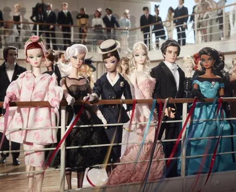
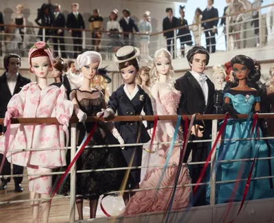

Welcome to Barbie Doll Showcase
Top 5 Barbies
Orignial Barbie
The original Barbie, released in 1959, is a highly sought-after collectible. She is known as the "1959 Barbie" or "Vintage Barbie" and is recognizable by her black and white swimsuit. It's perfect for collectors and Barbie enthusiasts. Barbie's appearance and fashion were also influenced by the high-fashion styles of the time. Barbie's original look was inspired by the fashion and glamour of the 1950s, and she has since evolved with changing fashion trends and societal expectations. Barbie has become an iconic and versatile doll that has adapted to reflect the changing times and the diverse aspirations of girls and collectors worldwide.
Barbie Pink Jubilee
This Barbie was released to mark the 30th anniversary of the Barbie brand, making it a significant and iconic doll in Barbie's history. Barbie Pink Jubilee is known for her stunning and extravagant pink gown. The gown is often elaborately designed with intricate details, making it a standout feature of the doll.
Barbie Holiday Dolls
Barbie Holiday Dolls are released every year, typically in the months leading up to the holiday season. They are highly anticipated by collectors and Barbie fans as they mark the spirit of celebration and festivity. Each Holiday Barbie is dressed in a special holiday-themed outfit. These outfits often feature luxurious fabrics, elegant designs, and seasonal colors. Some may wear glamorous gowns while others may have more casual holiday attire.
 

Barbie Silkstone Collection
Silkstone Barbie dolls are renowned for their exceptional craftsmanship and high-quality materials. They are designed to be more than just play dolls; they are works of art. The Silkstone Collection is primarily designed for adult collectors. These dolls are not intended for children's play but rather for adult enthusiasts who appreciate fine details and craftsmanship.
Barbie Fashion Model Collection
The Barbie Fashion Model Collection, often referred to as the BFMC is a series of Barbie dolls that cater to high-fashion enthusiasts and collectors. These dolls are celebrated for their stylish and sophisticated representation of high-fashion models. The BFMC is all about capturing the essence of high-fashion and runway modeling. These dolls are designed to emulate the style and grace of fashion models who grace the world's most prestigious catwalks. BFMC dolls are characterized by their elegance and sophistication. They often wear chic, upscale ensembles that include evening gowns, cocktail dresses, and tailored suits. The attention to detail in their outfits is unparalleled.